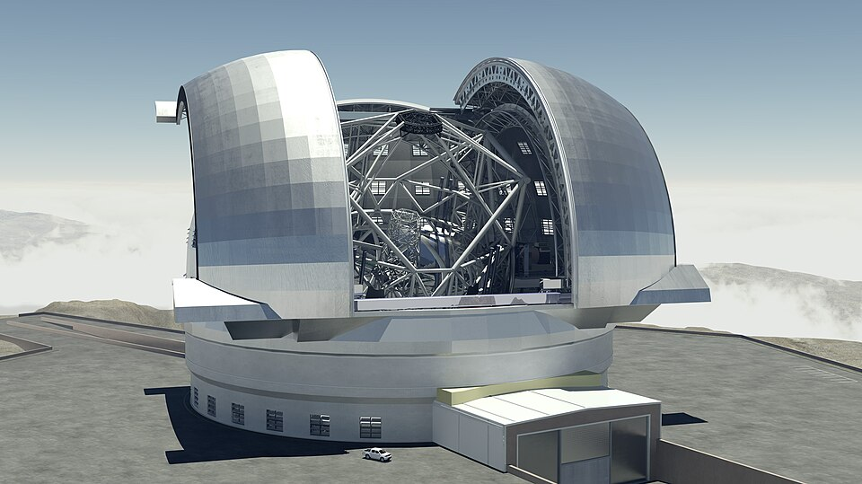
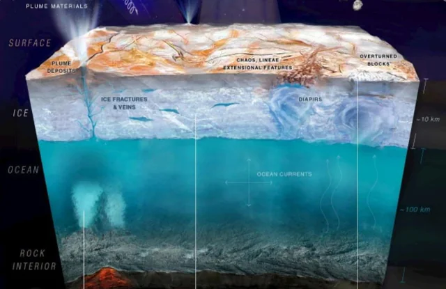

Astronomy is the scientific study of celestial objects, phenomena, and the universe as a whole.
Astronomers study the universe by using satellites, telescopes, and other instruments to collect data. They then analyze and draw conclusions from this data by applying concepts from physics, math, and other related fields. Astronomers often use supercomputers to perform more sophisticated calculations, requiring them to maintain a modern understanding of technology and programming, much like someone working in computer science would. In analyzing the nature of the universe, astronomers advance science in ways that prove consequential for government entities, private companies, and educational institutions.
Astronomers can work in a variety of industries. Without much exception, astronomers generally spend a handful of years working in academia at a university while they work towards their PhD. After graduation, the most common paths are to continue working, and likely teaching at universities, to find work in the private sector, or to work for a government organization.
In their work, astronomers frequently collaborate with experts in other fields, like physicists, chemists, and biologists. If an astronomer is not working in a research context, then they will likely be collaborating frequently with engineers as well.
Astronomers have to be proficient in a variety of areas, such as mathematics, physics, and computer programming, and they must also be curious in nature, since astronomy and its related fields are constantly changing. Because of their frequent collaboration with people working in other fields, they will also need to have a relatively good understanding of adjacent fields such as biology and chemistry.
That said, not all astronomers will have the same set of skills. For example, astrobiology, the study of the potential existence of life outside of Earth, is a modern branch of astronomy in which astrobiologists will have to have a comprehensive understanding of chemistry and biology on top of the other knowledge they must have as astronomers.
